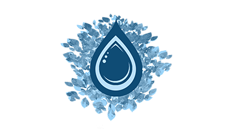

Hello there.
I am a software developer who also is a US Air Force Veteran who fell into the DC comics universe. I also love me some good coffee, taking some sweet photographs, and occasionally play video games to unwind.
My Skills.

Design and Development
I got my first taste of coding back in the day of Myspace. Little did I know later I would start off learning with graphic design and then later move to the programming. Check out the projects I have been working on.

Learning
Continuous learning has become a way of life. With the rate of technology, there is always new things out there to learn. Adapting to the changes and learning to keep up with those changes are key to success.